1התקנה על הטלפון
האפליקציה היא דף אינטרנט שמתקינים כאייקון. פעם אחת לכל טלפון. ממהרים? יש גם התחלה מהירה בעמוד אחד.
- פתחו בדפדפן את הכתובת: epic-pita.github.io/freak-pos
- אנדרואיד (כרום): תפריט ⋮ (למעלה מימין) → הוסף למסך הבית → התקן.
- אייפון (ספארי): כפתור השיתוף (ריבוע עם חץ למעלה) → הוסף למסך הבית → הוסף.
- בפתיחה הראשונה אשרו גישה למצלמה כשהטלפון שואל.
האפליקציה עובדת גם בלי קליטה. הקטלוג נשמר בטלפון, ומכירות שנרשמו בלי רשת נשלחות לבד כשהקליטה חוזרת.
2תחילת משמרת
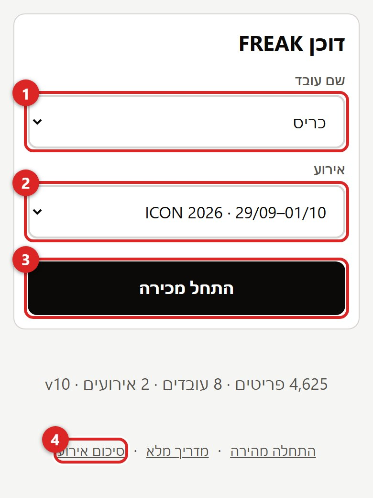
- בחרו את השם שלכם ברשימה.
- בחרו את האירוע. הרשימה מציגה את האירועים של הימים האלה.
- לחצו התחל מכירה.
- הקישורים למטה: התחלה מהירה, המדריך הזה, ודוח האירוע (למנהלים, סעיף 11).
אם השם שלכם או האירוע לא ברשימה: תגידו למנהל. הוא מוסיף אותם בגיליון, ובפתיחה הבאה הם יופיעו.
3שלוש דרכים למצוא פריט
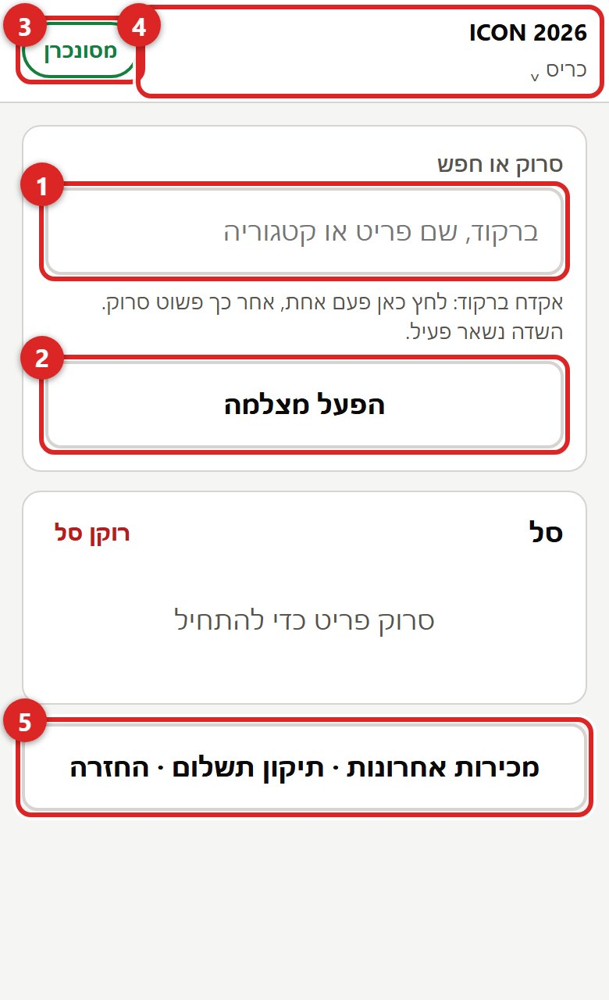
- אקדח ברקוד: לחצו פעם אחת בשדה החיפוש, ומאז פשוט סורקים. השדה נשאר פעיל אחרי כל פריט.
- מצלמת הטלפון: הפעל מצלמה (סעיף 4).
- הכפתור הצבעוני מראה אם המכירות נשלחו (סעיף 9).
- לחיצה על שם האירוע חוזרת למסך הפתיחה (סעיף 10).
- טעות במכירה שכבר נסגרה? מכירות אחרונות · תיקון תשלום · החזרה (סעיף 12).
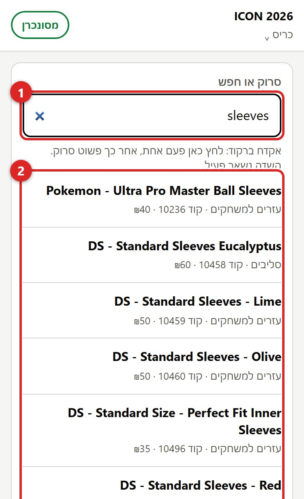
- חיפוש ידני: הקלידו חלק מהשם (גם באנגלית), ברקוד או קוד פריט.
- לחצו על הפריט ברשימה. מוצגים שם, קטגוריה, קוד ומחיר.
4המצלמה
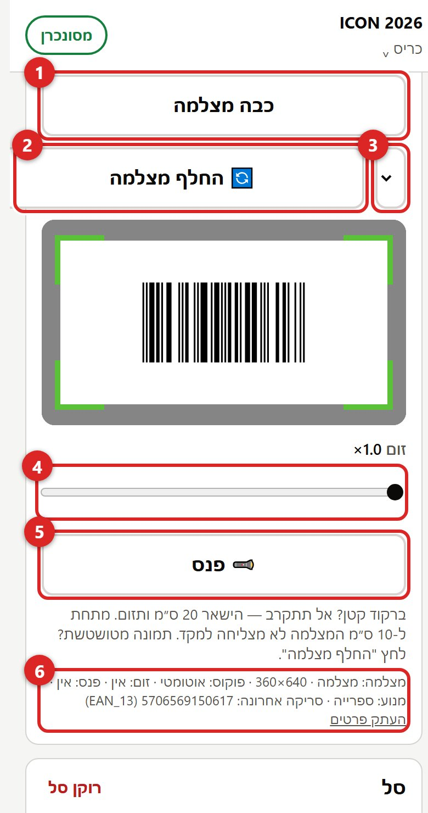
- הפעל מצלמה פותח את חלון הסריקה (כשהמצלמה פועלת הכפתור הופך לכבה מצלמה). הברקוד צריך להיות בתוך המסגרת, לרוחב.
- תמונה מטושטשת? לחצו החלף מצלמה. לרוב לטלפון יש כמה עדשות אחוריות ורק אחת מהן מצליחה למקד מקרוב. הבחירה נשמרת.
- אפשר גם לבחור עדשה מהרשימה.
- ברקוד קטן? אל תתקרבו. הישארו כ-20 ס״מ והגבירו זום. מתחת ל-10 ס״מ העדשה לא מסוגלת למקד.
- חושך? פנס.
- השורה הקטנה מציגה איזו עדשה פעילה ומה נסרק אחרון. אם משהו לא עובד, העתק פרטים ושלחו למנהל.
סריקה מוצלחת: מסגרת ירוקה, צפצוף ורטט קצר. הפריט נפתח מיד.
5כמות ומחיר
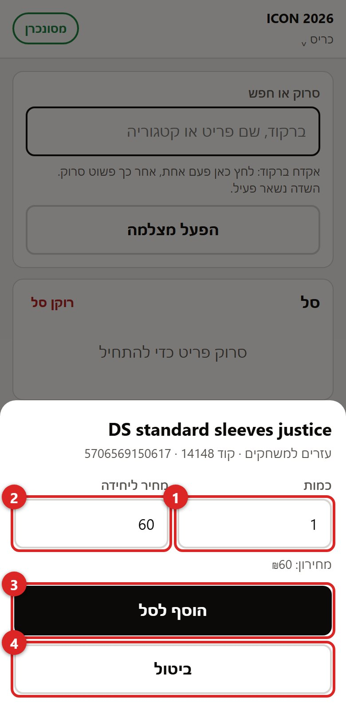
- כמות. ברירת המחדל 1.
- מחיר ליחידה. מגיע מהמחירון; אפשר לשנות (הנחה, מבצע). שינוי מסומן בסל.
- הוסף לסל.
- ביטול אם נסרק בטעות.
פריט שמופיע בלי מחיר: הקלידו את המחיר מהמדבקה. אי אפשר להוסיף פריט במחיר ריק.
6פריט שלא מזוהה
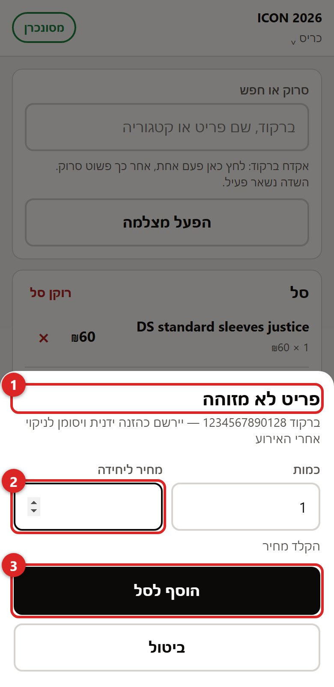
- הכותרת אומרת "פריט לא מזוהה" ומציגה את הברקוד.
- הקלידו את המחיר מהמדבקה.
- הוסף לסל. המכירה נרשמת כהזנה ידנית, ואחרי האירוע המנהל משייך אותה לפריט הנכון.
לפני שמוסיפים ידנית, נסו חיפוש לפי שם. הקטלוג מתעדכן כל בוקר, אבל פריט חדש לגמרי אולי עוד לא בו.
7הסל
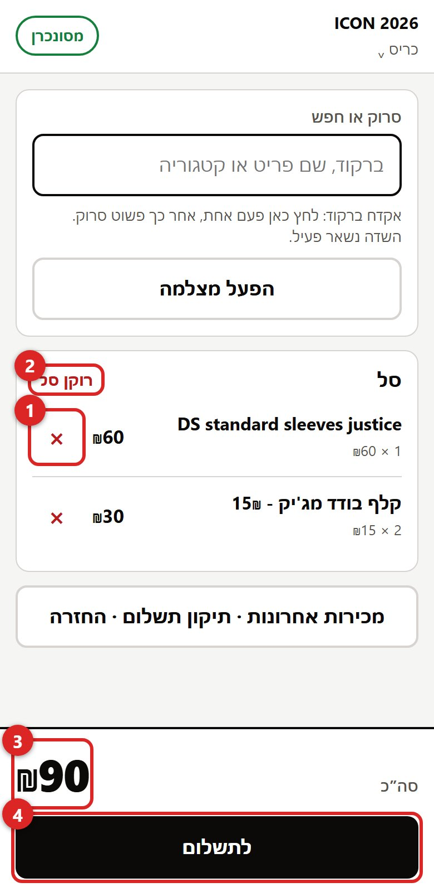
- × מוחק שורה אחת.
- רוקן סל מוחק הכל (מבקש אישור).
- הסכום מתעדכן בכל שינוי.
- לתשלום.
8תשלום
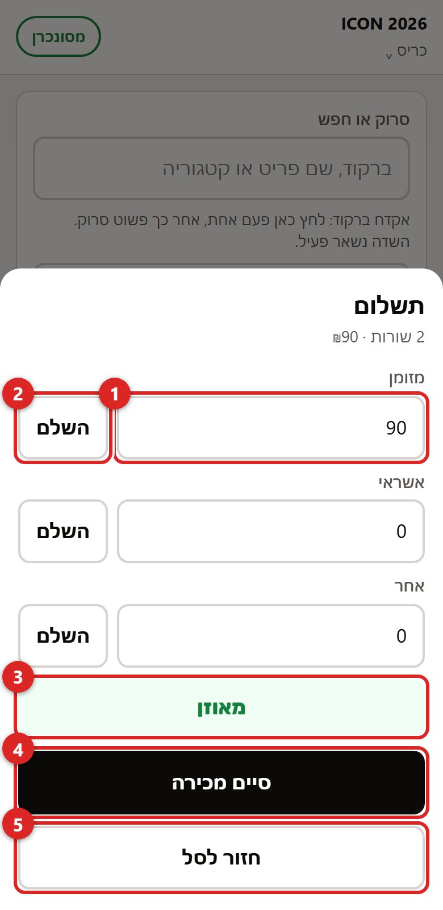
- שלושה שדות: מזומן, אשראי, אחר.
- השלם ליד שדה ממלא בו את כל מה שנשאר לשלם. לתשלום מלא במזומן: השלם ליד מזומן.
- השורה חייבת להיות מאוזן. אם כתוב "נותר לשלם" או "עודף", הסכומים לא שווים לסל.
- סיים מכירה נדלק רק כשמאוזן.
- חזור לסל אם צריך לתקן משהו.
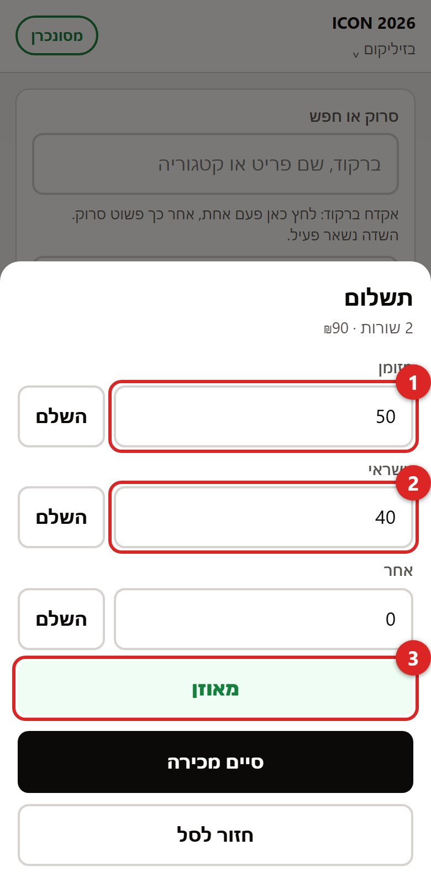
- הקלידו את הסכום במזומן.
- השלם ליד אשראי ממלא את היתרה.
- מאוזן → סיים מכירה.
"אחר" (ביט, העברה, החלפה, זיכוי) מחייב פירוט בשדה שנפתח. בלי פירוט אי אפשר לסיים.
הלקוח התחרט על אמצעי התשלום אחרי שסיימתם? לא מקלידים שוב. מתקנים את המכירה (סעיף 12).
האשראי נסלק במסופון כרגיל. הקופה רק רושמת שהתשלום היה באשראי.
9מה אומר הכפתור הצבעוני
כל מכירה נשמרת קודם בטלפון ורק אז נשלחת לגיליון. הכפתור למעלה מראה איפה זה עומד.
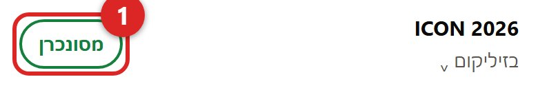
מסונכרן — הכל נשלח. ככה זה צריך להיראות רוב הזמן.
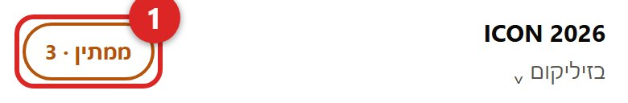
ממתין · 3 — 3 מכירות מחכות לשליחה. נשלחות לבד תוך שניות. אפשר ללחוץ על הכפתור כדי לנסות עכשיו.
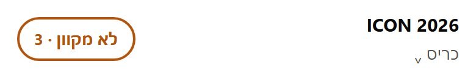
לא מקוון · 3 — אין קליטה. ממשיכים למכור רגיל; המכירות נשלחות כשהקליטה חוזרת. לא למחוק את האפליקציה ולא לנקות את הדפדפן כשיש מספר על הכפתור.
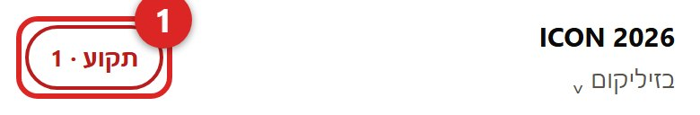
תקוע · 1 — השרת דחה מכירה. לחצו על מכירות תקועות שמופיע מתחת לסל, ⧉ מעתיק את הפרטים, ושלחו למנהל. לא למחוק בלי לשלוח.
10להחליף עובד או אירוע
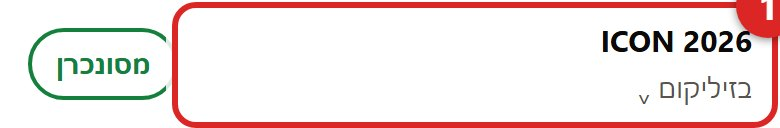
- לחצו על שם האירוע למעלה. חוזרים למסך הפתיחה ובוחרים מחדש.
מחליפים משמרת? כל אחד בוחר את השם שלו לפני שמתחיל למכור. המכירות נרשמות על שם המוכר.
11סוף האירוע (מנהלים)
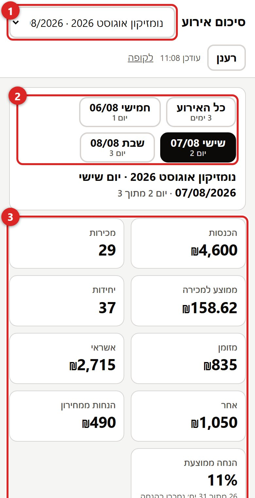
- בוחרים אירוע. כל אירוע שהיו בו מכירות מופיע.
- כנס של כמה ימים: בוחרים כל האירוע או יום אחד. היום הנוכחי מסומן "היום". כל הדוח מתעדכן לבחירה: הריבועים, גרף השעות, העובדים, הקטגוריות, הפריטים ופירוט המכירות. אפשר גם ללחוץ על שורה בטבלת "לפי יום".
- הכנסות, מספר מכירות, ממוצע למכירה, מזומן / אשראי / אחר, כמה כסף נמכר מתחת למחירון ומה ההנחה הממוצעת. בטבלת "לפי יום" אותם מספרים לכל יום, ושורת סיכום לכל האירוע.
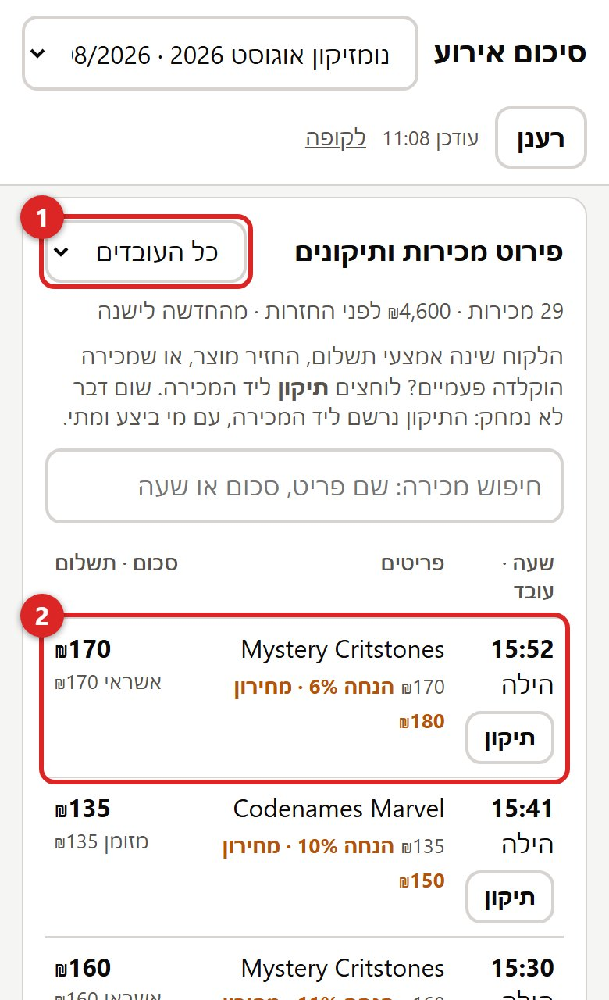
- אפשר לסנן לעובד אחד.
- כל מכירה: שעה, מי מכר, הפריטים, הסכום ואיך שולם. פריט שנמכר במחיר שונה מהמחירון מסומן, עם מחיר המחירון.
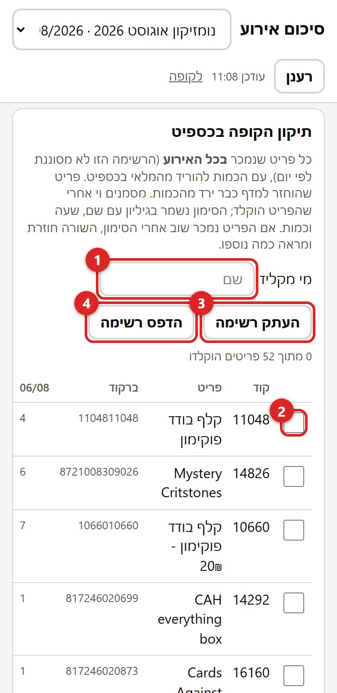
- כותבים מי מקליד.
- לכל פריט: הכמות למחיקה מהמלאי בכספיט, לכל האירוע. אחרי שהוקלד, מסמנים וי. הסימון נשמר עם שם, שעה וכמות. אם הפריט נמכר שוב אחרי הסימון (למשל ביום השני של כנס), השורה נפתחת מחדש ומראה כמה נוספו.
- העתק רשימה לוואטסאפ או לאקסל.
- הדפס רשימה.
פריטים עם "ללא קוד" הוזנו ידנית בדוכן. צריך למצוא אותם בכספיט לפי הברקוד או השם.
12תיקון מכירה: תשלום, החזרה, ביטול
הלקוח שילם בסוף בדרך אחרת, החזיר מוצר, או שמכירה הוקלדה פעמיים. לא מקלידים מכירה חדשה: מתקנים את המקורית. שום דבר לא נמחק, וכל תיקון נרשם עם שם ושעה.
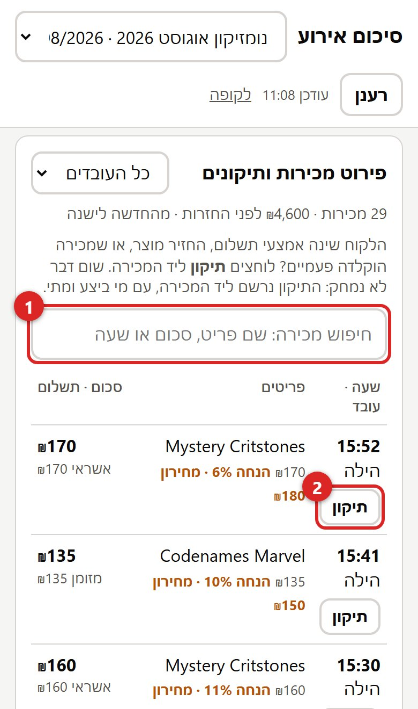
- מחפשים את המכירה לפי שם פריט, סכום או שעה. אפשר לבחור יום אחר או אירוע אחר, גם אירוע שכבר נגמר.
- לוחצים תיקון ליד המכירה.
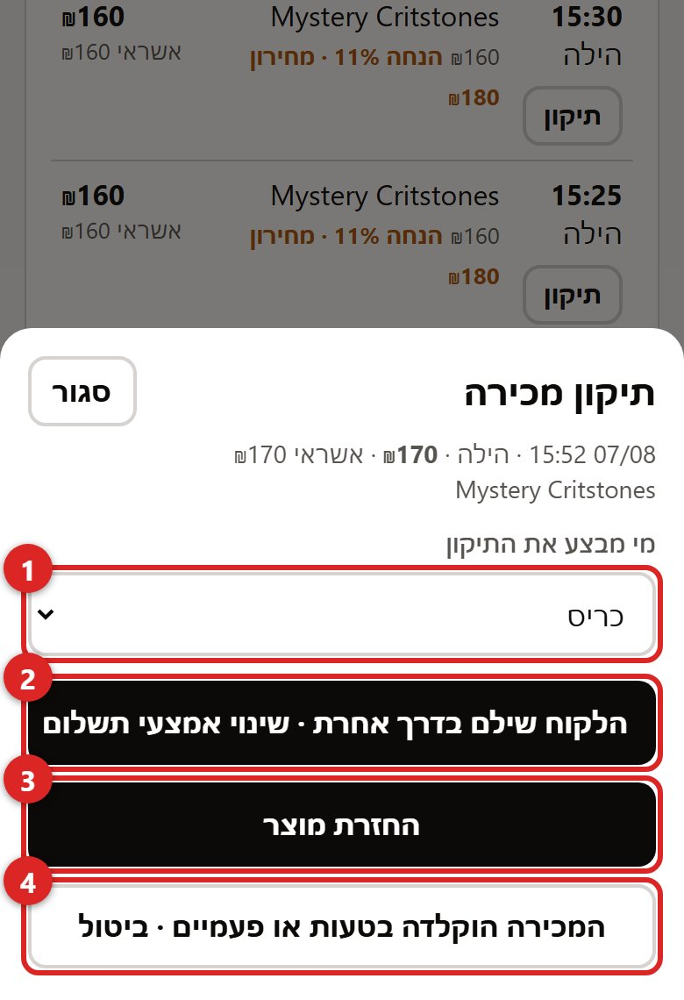
- בוחרים מי מבצע את התיקון.
- שינוי אמצעי תשלום: הסכום נשאר. מחלקים אותו מחדש בין מזומן, אשראי ואחר.
- החזרת מוצר: בתמונה הבאה.
- ביטול: למכירה שהוקלדה בטעות או פעמיים. מבטלים את העותק המיותר. הוא נשאר רשום אבל לא נספר.
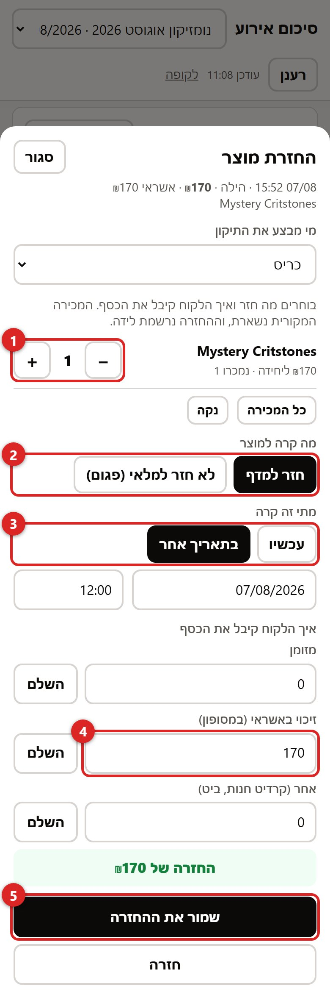
- מסמנים כמה יחידות חזרו מכל פריט.
- חזר למדף, או פגום ולא חזר למלאי.
- מתי זה קרה: עכשיו, או תאריך אחר אם מתקנים בדיעבד.
- איך הלקוח קיבל את הכסף: מזומן, זיכוי באשראי במסופון, או אחר (קרדיט חנות, ביט) עם פירוט.
- שומרים. ההכנסות, המזומן והאשראי של אותו יום מתעדכנים, והפריט יורד מרשימת הכספיט אם חזר למדף.
טעיתם בהחזרה? פותחים שוב תיקון על אותה מכירה ולוחצים בטל את ההחזרה הזו.
את הזיכוי בכרטיס האשראי עצמו עושים במסופון. כאן רק רושמים שהוא נעשה.
13תקלות ופתרונות
| מה קורה | מה עושים |
|---|---|
| המצלמה לא נפתחת: "אין הרשאה" | בכרום: המנעול ליד הכתובת → הרשאות → מצלמה → אפשר. באייפון: הגדרות → ספארי → מצלמה → אפשר. אם זה לא עוזר מהאייקון, פתחו את הכתובת בספארי. |
| המצלמה שחורה או תפוסה | סגרו אפליקציות אחרות שמשתמשות במצלמה. אם צריך, הפעילו מחדש את הטלפון. |
| הסריקה לא תופסת | החלף מצלמה; התרחקו ל-20 ס״מ והגבירו זום; נקו את העדשה; פנס בחושך. בינתיים: אקדח ברקוד או חיפוש לפי שם. |
| ברקוד נסרק אבל "פריט לא מזוהה" | חפשו לפי שם. אם אין: הזנה ידנית עם המחיר מהמדבקה (סעיף 6). |
| המחיר במסך שונה מהמדבקה | הקלידו את המחיר הנכון בשדה המחיר. השינוי מסומן ומדווח. |
| הלקוח שילם אחרת, החזיר מוצר, או שמכירה הוקלדה פעמיים | לא מקלידים מכירה חדשה. מתקנים את המכירה המקורית (סעיף 12). |
| "ממתין" הרבה זמן | לחצו על הכפתור. אם אין קליטה, זה ישלח לבד אחר כך. אל תמחקו כלום. |
| "טוקן שגוי" | סגרו ופתחו את האפליקציה כדי לקבל עדכון. אם נשאר: למנהל. |
| המסך "קפא" | סגרו ופתחו את האפליקציה. הסל והמכירות שממתינות נשמרים בטלפון. |